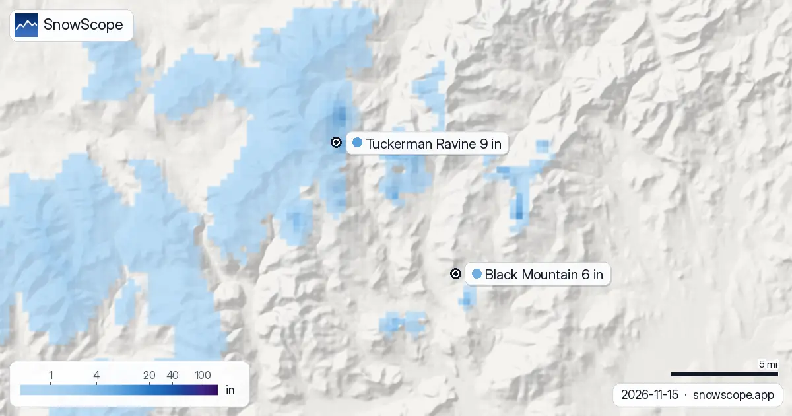

Donde mejor se esquía la nieve en el noreste de EE. UU.: Tuckerman Ravine y Black Mountain (15 de noviembre)
Sopesamos la nieve que ya hay en el suelo, la nieve nueva de las últimas 72 horas y lo que añade la previsión, y elegimos Tuckerman Ravine y Black Mountain. El manto más grueso del grupo está en Tuckerman Ravine, unos 9 in (24 cm) en las pistas altas; después Black Mountain 6 in (15 cm). La nieve en la montaña es agua guardada para la primavera: lo que cae ahora alimenta después ríos y embalses.
Consulta la previsión de nieve en tiempo real de Tuckerman Ravine en la app SnowScopeEspesor de nieve, alertas de nieve polvo y mapa 3D, gratis.
Los próximos días en la previsión
Las previsiones a varios días pueden cambiar: vuelve a mirar el mapa el día antes de viajar.
| Estación | Espesor de nieve | Nieve nueva, 72 h | Previsto, próximos días | Cota máx. |
|---|---|---|---|---|
| Tuckerman Ravine | 9 in (24 cm) | 2 in (4 cm) | 0 in (0 cm) | – |
| Black Mountain | 6 in (15 cm) | 1 in (2 cm) | 0 in (0 cm) | 2247 ft (685 m) |
Dónde aguanta la nieve, dónde se funde
Las laderas sur reciben más sol y se funden antes; las laderas norte en altura guardan su nieve más tiempo.
Con seguridad
Antes de salir fuera de pista o de travesía, lee el boletín oficial de aludes (enlaces abajo).
Dónde está la mejor nieve
En las últimas 72 horas cayeron 2 in (4 cm) de nieve nueva en Tuckerman Ravine.
El 11 de noviembre, último día despejado, los satélites no encontraron nieve en Black Mountain; quizá solo cubre las pistas más altas, o cayó después de esa vista.
Consejos para esquiadores
- Nieve en el mapa no significa que la estación esté abierta: consulta remontes y fechas de apertura en su web.
- Las estaciones pequeñas al lado de los grandes nombres suelen recibir la misma borrasca y menos colas. Míralas antes en el mapa.
- La nieve de principio de temporada es fina. Quédate en pistas abiertas y pisadas: piedras y hierba están justo debajo.
- La sombra protege el manto. Las laderas norte en altura reciben menos sol, así que su nieve dura más que en la cara sur.
- Activa una alerta de nieve polvo en la app SnowScope para saber cuándo Tuckerman Ravine recibe nieve nueva.
Sobre estas cifras
Los espesores de nieve de las estaciones son la nieve más profunda en las pistas altas según el modelo de nieve de SnowScope (unos 1 km, cálculo del 15 de noviembre); son estimaciones para una zona, no una medida en un punto. Los valores de las estaciones de medida son medidas en la fecha indicada. Las previsiones pueden cambiar. Consulta siempre el boletín oficial de aludes antes de salir fuera de pista.
Boletines oficiales de aludes: Mount Washington Avalanche Center
Citar este informe
Para investigación, docencia o prensa: cifras y gráficos reutilizables libremente bajo CC BY 4.0 con esta cita.
SnowScope (2026), Donde mejor se esquía la nieve en el noreste de EE. UU.: Tuckerman Ravine y Black Mountain (15 de noviembre), https://snowscope.app/blog/es/2026/11/us-northeast-where-to-ski-best-snow-15-november-2026.html, consultado el 2026-11-15
SnowScope (Atlas Labs). (2026, November 15). Donde mejor se esquía la nieve en el noreste de EE. UU.: Tuckerman Ravine y Black Mountain (15 de noviembre). SnowScope snow reports. https://snowscope.app/blog/es/2026/11/us-northeast-where-to-ski-best-snow-15-november-2026.html
BibTeX
@misc{snowscope2026usnortheastwheretoskibes,
author = {{SnowScope (Atlas Labs)}},
title = {Donde mejor se esquía la nieve en el noreste de EE. UU.: Tuckerman Ravine y Black Mountain (15 de noviembre)},
year = {2026},
month = nov,
howpublished = {\url{https://snowscope.app/blog/es/2026/11/us-northeast-where-to-ski-best-snow-15-november-2026.html}},
note = {Published 2026-11-15 17:21 UTC; accessed 2026-11-15}
}· CC BY 4.0 · Métodos, datos y herramientas →
Tuckerman Ravine: nieve y temperatura según la altura, este invierno vs el pasado (herramientas) →
Sigue Tuckerman Ravine
Gratis: un aviso cuando llega la nieve y la previsión cada mañana.
Más partes de nieve

¿Hay más nieve que hace un año? Comparamos hoy con el 12 de noviembre del invierno pasado en 4 estaciones en el noreste de EE. UU.: 0 tienen más …

¿Dónde nevará en el noreste de EE. UU. entre el 13 de noviembre y el 26 de noviembre, y cuánto? Preguntamos a los dos modelos globales que llegan a …

Nuestra previsión pone la isoterma de 0 °C en el noreste de EE. UU. entre 0 ft (0 m) y 4593 ft (1400 m) en los días que vienen. El jueves 12 de …